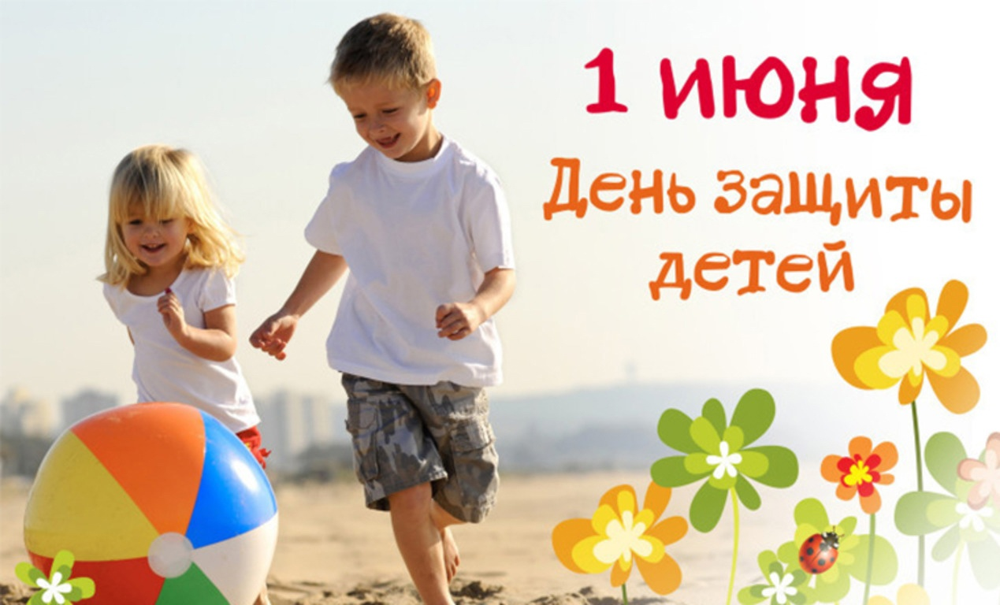
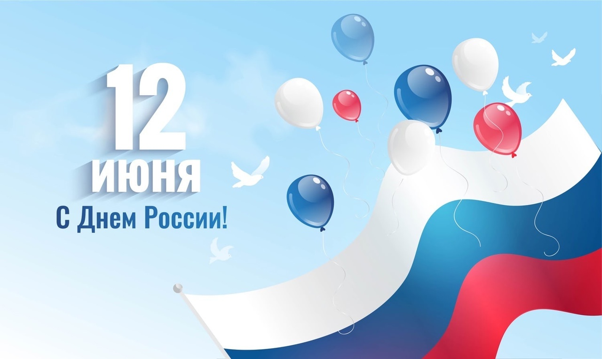
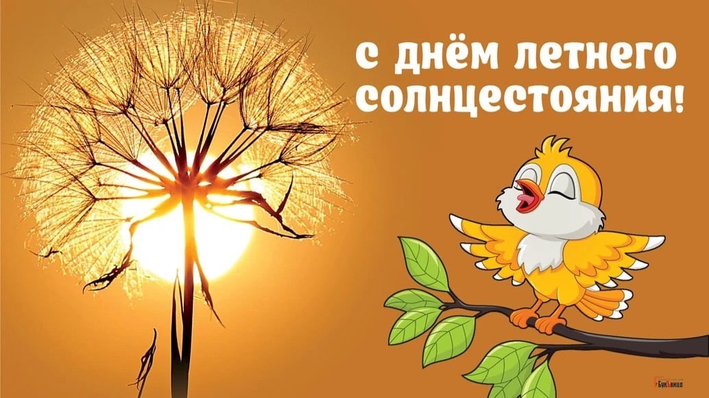
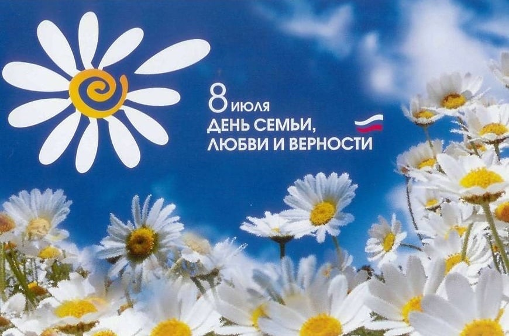
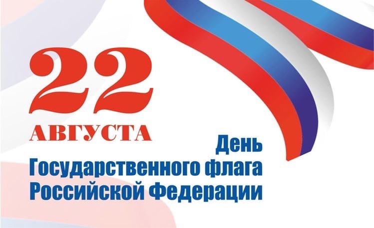

Лето – это прекрасная пора, которую любят и ждут все без исключения, и дети, и взрослые. Это прекрасное время солнечных и теплых дней, поездок на море всей семьей или дружной компанией, это то время, когда безумно радуешься дождю, танцуешь под ним, а после, любуешься прекрасной радугой, которая появляется прямо над головой.
Июнь - первый летний месяц. В народе говорят: «Май - радость, а июнь - счастье». Заканчивается учебный год, дети уходят на каникулы, начинается пора отпусков и отдыха на природе.
· Международный день защиты детей - 1 июня
Государство признает детство важным этапом жизни человека и исходит из принципов приоритетности подготовки детей к полноценной жизни в обществе, развития их социально значимой и творческой активности, воспитания у них высоких нравственных качеств, патриотизма и гражданственности.

· День России - 12 июня
День России – символ национального единства всех жителей России, государственный праздник, учреждённый в ознаменование принятия Декларации о государственном суверенитете России. Этот праздник отмечают с 1991 года.

· День летнего солнцестояния - 21 июня
Праздник летнего солнцестояния широко отмечается разными народами мира. Этот день символизирует плодородие земли, сельскохозяйственные системы и системы производства продовольствия, культурное наследие и тысячелетние традиции и играет важную роль в укреплении связей между коренными народами на основе взаимного уважения, взаимодополняемости, взаимности и сотрудничества.

Июль - следующий месяц лета. Многие поэты и писатели, композиторы и художники воспевали его в своих знаменитых творениях. Это очень чудная, и хлопотная пора, ведь это уже середина лета.
· День семьи, любви и верности - 8 июля
Всероссийский праздник, получивший название «День семьи, любви и верности», впервые прошёл 8 июля 2008 года. В городах России, где семью почитают и считают основой счастливой жизни, проходят многочисленные концерты и спектакли, ярмарки и мастер-классы, устраивают детские и семейные викторины и соревнования, а также множество других семейных мероприятий.

Август — завершающий месяц лета. Этот месяц радует нас теплом, яркой солнечной погодой. Месяц август наряду с месяцем июлем считается самым теплым месяцем в году. - Источник: Месяц август
· День государственного флага - 22 августа
22 августа в России отмечают День Государственного флага. По всей стране проходят торжественные мероприятия, посвященные российскому триколору. В этот день особое внимание уделяют истории нашей страны и ее символике.